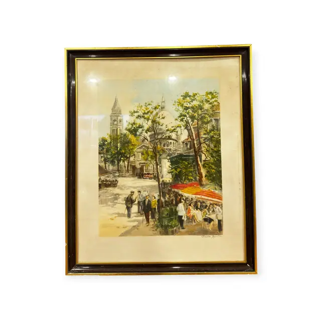
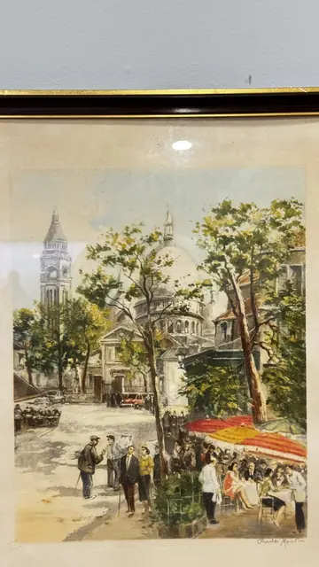
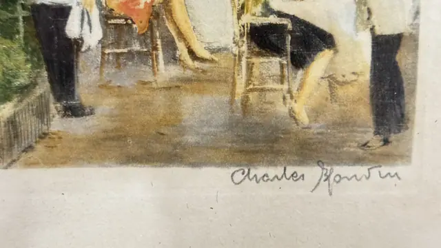

Paintings & Prints
Montmartre Cafe Terrace, Paris, Charles Blondin, Signed, Framed
Charles Blondin · mid 20th century
Price Upon Request



About the Item
Charles Blondin. A bright Parisian street scene worked in short broken strokes. Plane trees screen the domes of Sacre-Coeur and a slim bell tower; below, a scarlet awning shelters a row of cafe tables crowded with figures in dark coats. The palette is fresh green and cream with the awning as the single hot accent. Signed at the lower right. Framed in black with a gilt inner lip. Medium: gouache or mixed media on paper. Signed lower right, within the image, reading "Charles Blondin". Condition: paper toned overall; no visible tears.
About the Artist
Charles Blondin was a French painter of the mid twentieth century associated with the School of Paris, known for impressionistic Paris street scenes, including Montmartre views, in warm colourful palettes. His gouaches and paintings appear regularly at auction, though detailed biographical records are scarce.
Details
- Creator:
- Charles Blondin
- Creation Year:
- mid 20th century
- Dimensions:
- Height: 32.0 in (81.28 cm)
Width: 25.0 in (63.5 cm)
outside of frame - Medium:
- gouache or mixed media on paper
- Period:
- 20Th
- Condition:
- Offered in the condition shown in the photographs.
- Reference Number:
- VO-235
- Documentation:
- none seen